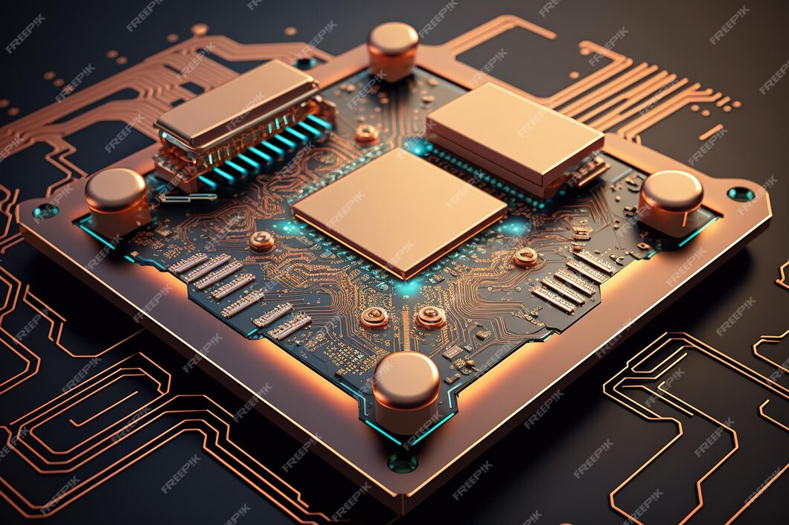
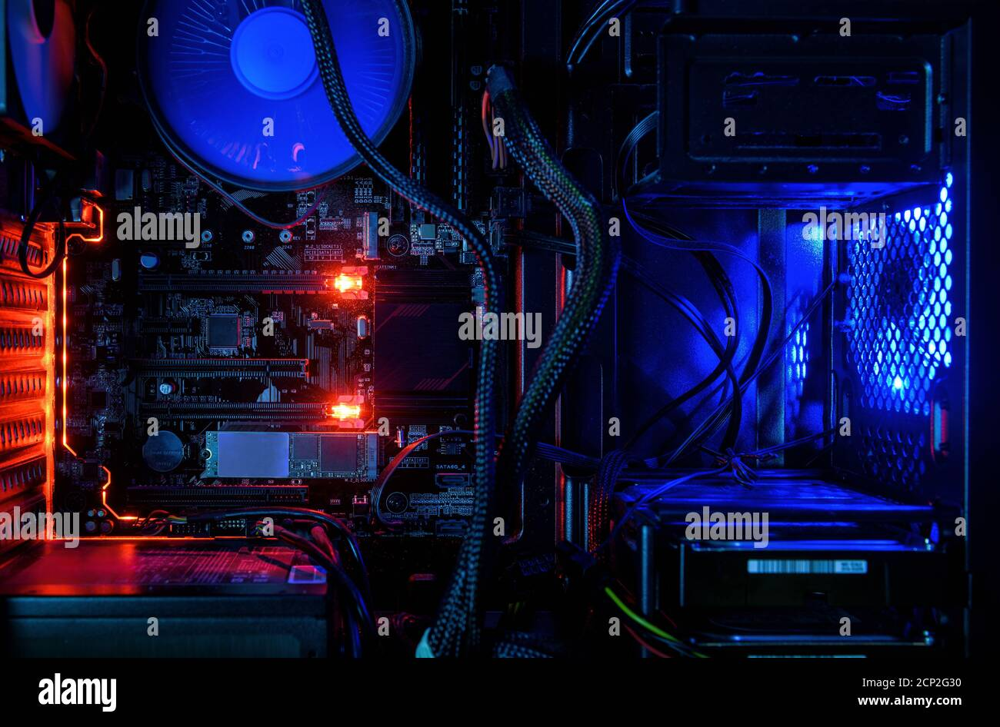
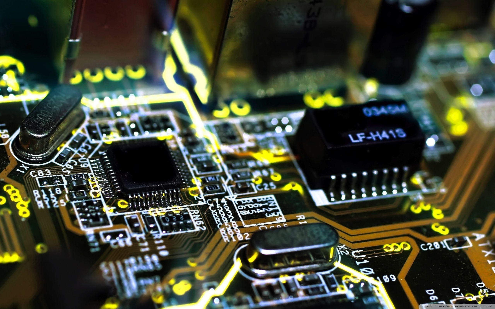
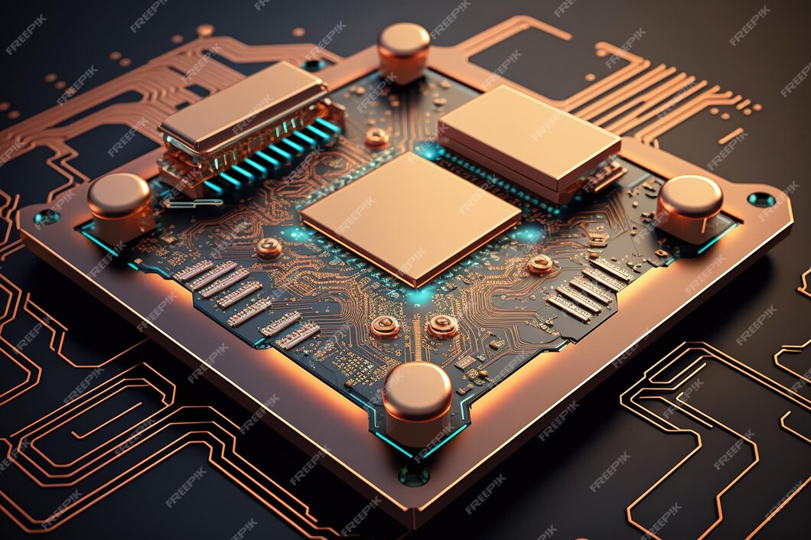
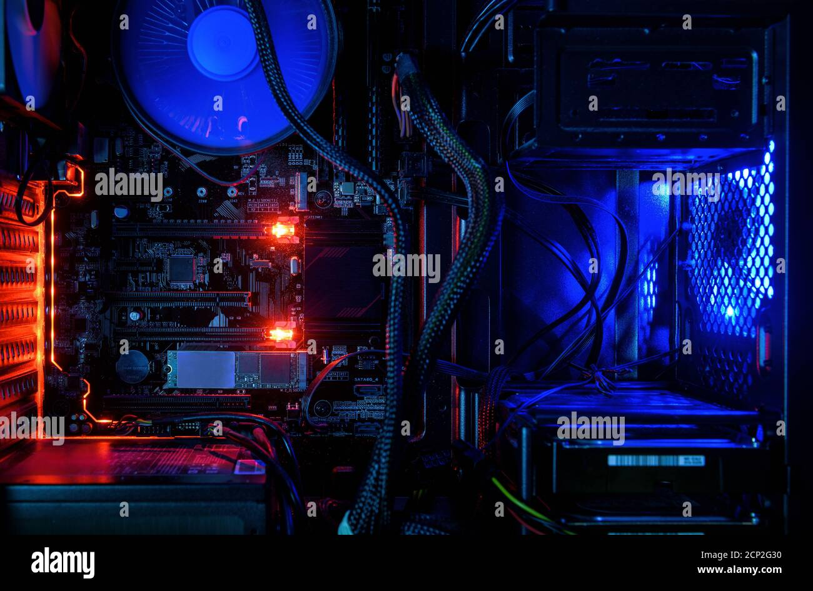
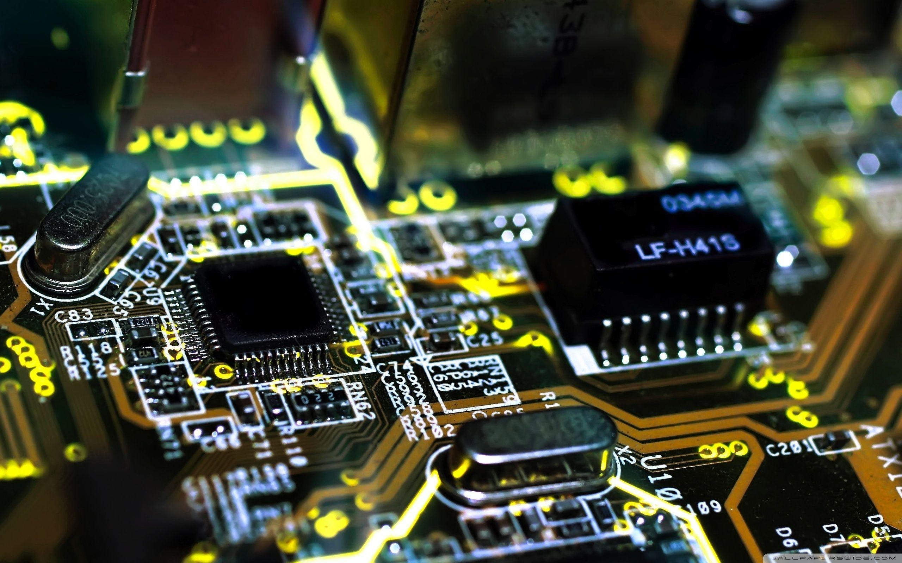
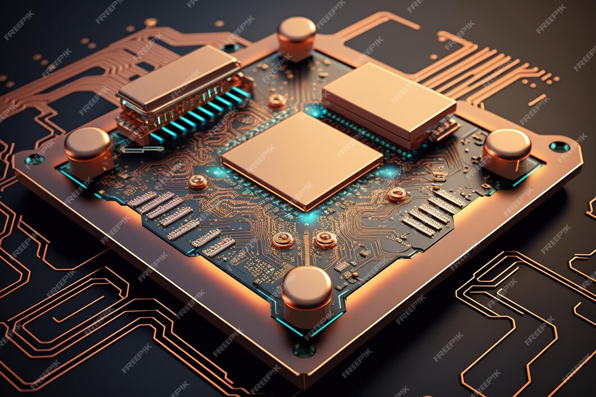
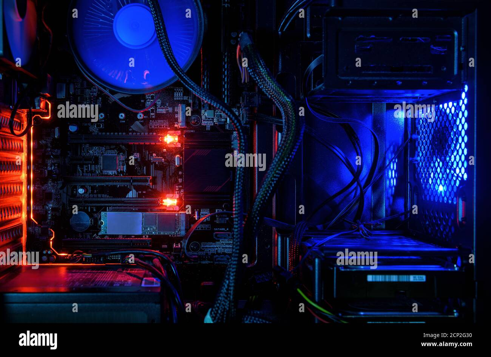
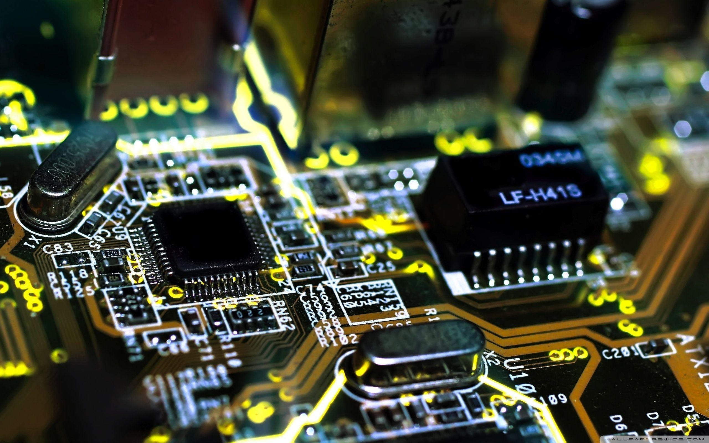
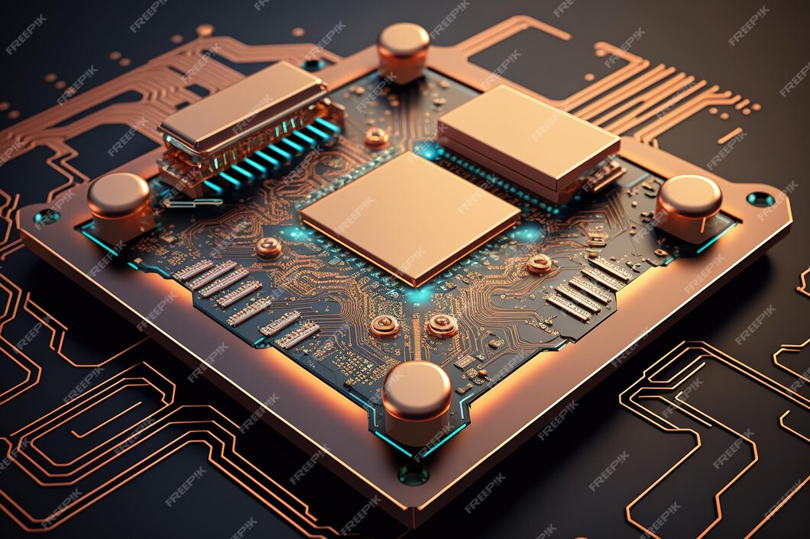
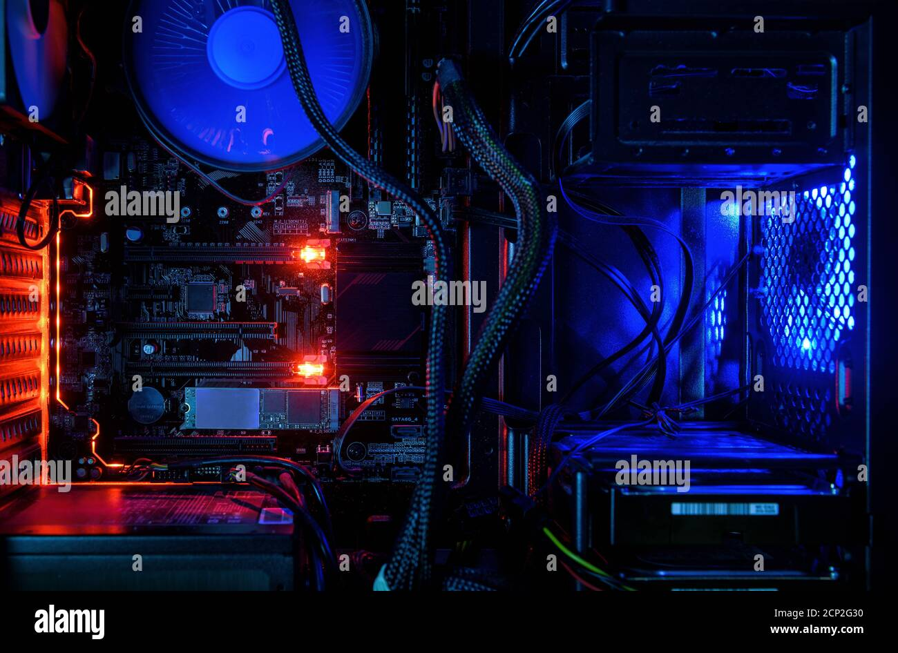
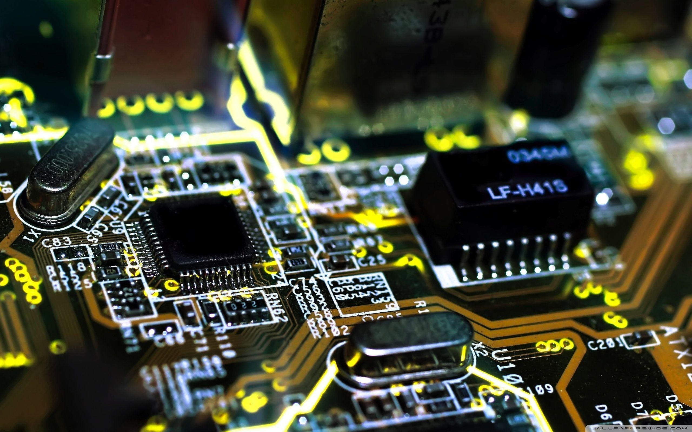
Computer hardware is a collective term used to describe any of the physical components of an analog or digital computer.The term hardware distinguishes the tangible aspects of a computing device from software,which consists of written, machine-readable instructions or programs that tell physical components what to do and when to execute the instructions.Hardware and software are complementary. A computing device can function efficiently and produce useful output only when both hardware and software work together appropriately.Computer hardware can be categorized as being either internal or external components. Generally, internal hardware components are those necessary for the proper functioning of the computer, while external hardware components are attached to the computer to add or enhance functionality.